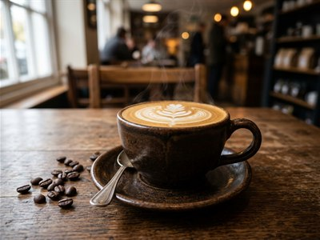
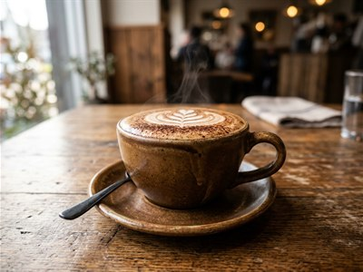
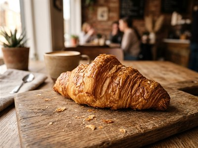

Caffe Latte
Smooth espresso with creamy milk, crafted from freshly roasted Kenyan highlands beans.
KES 320Single-origin coffee from Nyeri and Kiambu, paired with warm morning pastries in Westlands, Nairobi.
View Our Menu →Welcome to Savanna Brew Café, your cosy corner in Westlands where every cup tells a story. We roast and brew coffee from the highlands of Nyeri and Kiambu, and pair it with fresh pastries baked every morning. Come in, relax, and taste the difference.

Smooth espresso with creamy milk, crafted from freshly roasted Kenyan highlands beans.
KES 320
Espresso with steamed milk and velvety foam, balanced with rich cocoa notes.
KES 300
Flaky and freshly baked every morning to pair effortlessly with your favourite brew.
KES 250